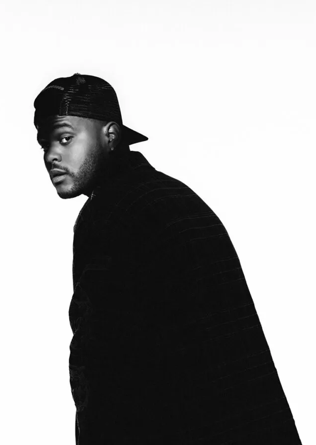

THE WEEKND
The Weeknd, byname of Abel Makkonen Tesfaye,
(born February 16, 1990, Toronto, Ontario, Canada),
Canadian rhythm-and-blues singer and songwriter who was
perhaps best known for his explicit songs about sex and drugs,
many of which were autobiographical, and for his soaring falsetto
and its singular tremolo.
Tesfaye's mother and grandmother immigrated in the 1980s to Canada
from Ethiopia, and his first language was Amharic. When he was in
grade 11, he quit school and left home, devoting himself to unbridled
partying. Tesfaye eventually landed a job at American Apparel and at
the same time began writing songs about drug use, casual sex, and alienation.
He crossed paths with musician and producer Jeremy Rose, and they
started working together. Their collaboration yielded three atmospheric
songs—“The Morning,” “Loft Music,” and “What You Need”—with lyrics that
were partly sung and partly rapped. The songs, credited to The Weeknd,
were uploaded as audio files to the video-sharing Web site YouTube
in late 2010; their popularity grew exponentially after they were
posted to the blog of Canadian rapper Drake.
